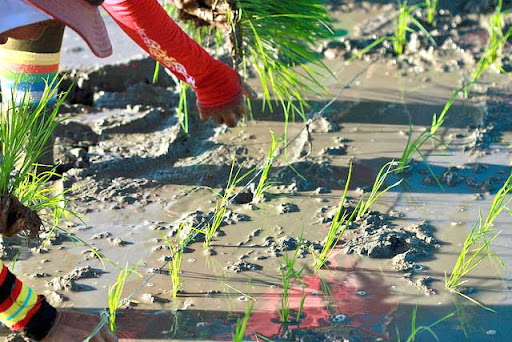
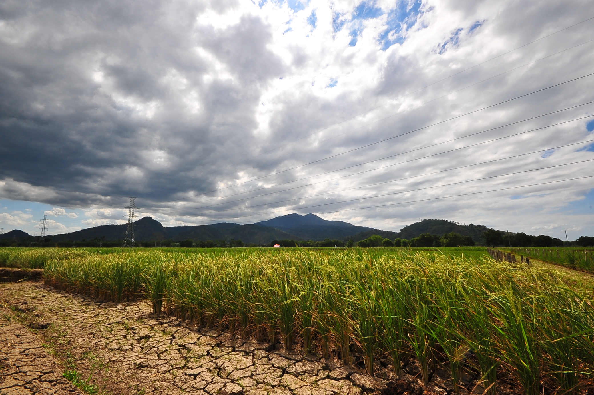

How To Plant Rice
To plant rice, sow pre-germinated seeds into prepared, waterlogged fields or transplant young seedlings from nurseries into flooded paddies, ensuring proper spacing for optimal growth.
Ideal Soil For Growing Rice

The ideal soil for growing rice is deep, fertile, and well-drained, with a high clay content to retain water, and a pH ranging from 5.5 to 7.0, often found in floodplains and river deltas.
Ideal Climate For Growing Rice
The ideal climate for growing rice is a warm, humid environment with temperatures ranging between 70°F to 95°F (21°C to 35°C), abundant water supply, and ample sunshine, typically found in tropical and subtropical regions.